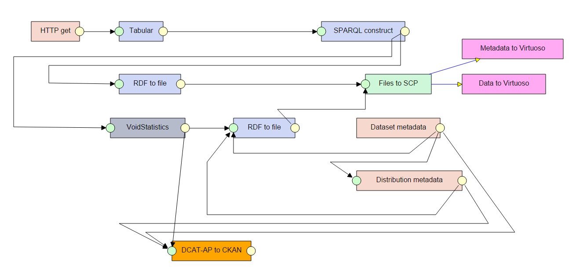
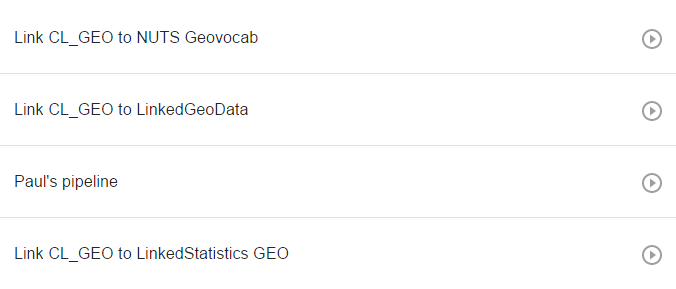
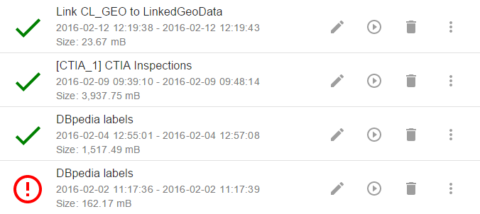
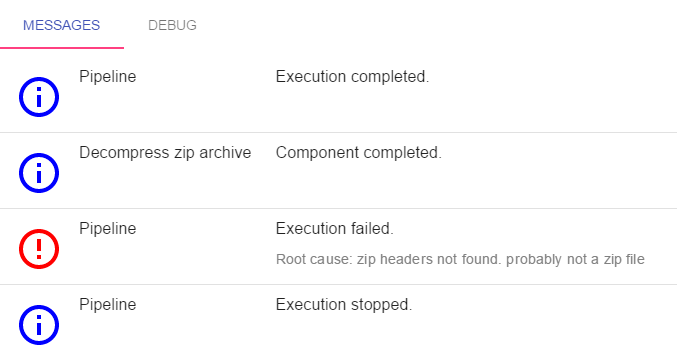
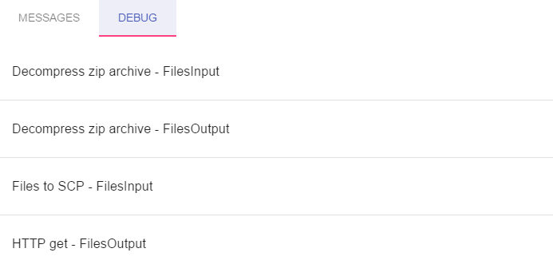

Once you have LinkedPipes ETL installed and running, it is time to explore. Of course, there is not much to see in an empty instance, but let us go through the basics. The image below is what we call a Pipeline. It is a defined data transformation process which consists of interconnected Data Processing Units (DPUs). You can add a DPU to a pipeline by clicking in an empty space and selecting the desired DPU from the list. Each DPU has a name, green input ports and yellow output ports. The ports represent Data Units, which can contain either RDF data or regular files, according to their type. Ports are connected by edges, which indicate the flow of data. Only ports representing Data Units of the same type can be connected. 
Pipelines, defined data transformation processes consisting of interconnected Data Processing Units (DPUs), are one of the key concepts in LinkedPipes ETL.  So far, you can name them, display them, edit them and run them. Once you run a Pipeline, you create its Execution.
An Execution is one run of a Pipeline. It can either succeed or fail. On the Executions page, you can see the currently running executions with their progress as well as finished executions.  You can see the start and end time of an Execution as and the amount of disk space it takes up. You can free that disk space by using the trash icon. You can also re-run the execution or edit its Pipeline, which is useful for debugging.
Once an Execution is finished, you may want to inspect it in more detail. You can do that by inspecting messages from the execution and by going through the actual data that is passed among DPUs.
In Messages, you can see a list of messages indicating, how the Execution went. Each DPU in a Pipeline can send a message when something goes wrong, to simply show its execution progress or to say that it is done.  When something goes wrong, you can see a detailed error report in the message detail.
In Debug view, you can see a list of data units attached to executed DPUs. Typically, one DPU will have one input and one output data unit, but this is not a rule. That is why the individual data units are named to reflect their expected content.  You can open a data unit and see the files inside via FTP. Soon, we will add the option to directly query RDF data units using SPARQL.